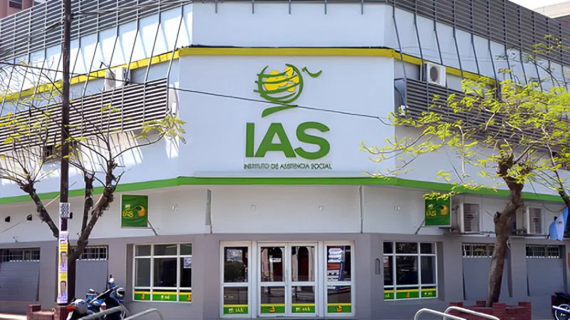

Instituto de Asistencia Social - IAS
Organismo de Control de Juegos de Azar - Formosa
La IAS son organismo dependiente del Gobierno de la Provincia de Formosa , brindando un saludable apoyo a la cultura formoseña, acaba de hacer posible el reacondicionamiento de algunos sectores del Teatro de la Ciudad.
